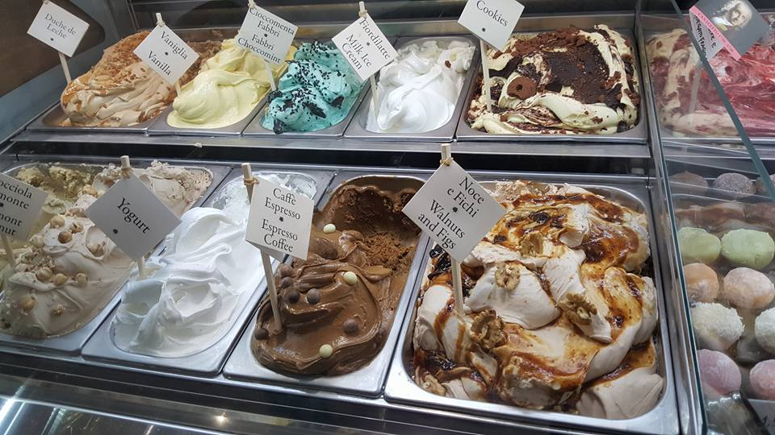

Milan, a metropolis in Italy's northern region, is a global capital of fashion and design. It’s a financial hub also known for its high-end dining and shopping. Milan goes way back to centuries of art and culture. Here, you can find the Gothic Duomo di Milano cathedral and the Santa Maria delle Grazie convent, where the famous Leonardo da Vinci’s “Last Supper” fresco is held. It’s a quiet city with rich historical background. We weren’t able to go to as much places as we could as we only had two days to spend in that city. Worst, I got sick during our holiday so Jorence had to take a quick break from the walking and map reading for the day. However, on our last day even if I still wasn’t feeling my best, we managed to visit as much attractions as possible. There wasn’t much as we were right in the city but the best part was the Duomo experience. My girlfriend and I walked the entire city on foot and eventually took the tram on our way back. It was such a laid back city!
One of the best churches i've seen in italy. This church is dedicated to Santa Maria Nascentre. It took nealy six centuries to build it. The entrance fee is 15euro and it includes Cathedral terrace by lift, Doumo Museum, Archaeological Area and San Gottardo Church. You can also get cheaper one that is only 11 euro and instead of taking a lift going upstair, you will take there by foot. I also recommend you to go upstair to see the whole city of milan. Please do not wear a SKIRT if you go inside the church and If you wear a SKIRT make sure you have a scarf or something to cover your knee.
castello sforzesco
Before you go inside the castle you will see the beautiful fountain infront of it. It's a big castle and inside the castle you will find the last incomplete work of Michelangelo Buonarroti and the Sala delle Asse of Leonardo da Vinci at the Sforza Court. Unfortunately, we coudn't see the work of Leonard da vinci because it was renovated that time.
Venice, capital of northern Italy’s Veneto region, is built on more than 100 small islands in a marshy lagoon in the Adriatic Sea. Its stone palaces seemingly rise out of the water. There are no cars or roadways, just canals and boats. The Grand Canal snakes through the city, which is filled with innumerable narrow, maze-like alleys and small squares. It is highly recommended for couples who seeks romantic escapade.
Is one of the oldest church in Italy and it was 924 years old. The church is very ancient and you are not allowed to take pictures inside of the church. When you are inside the church you will be amazed because of the old decoration and its was made of different kind of marbles. You will also find the Pala d'Oro, altar screen of gold cloisonne enamel, Byzantine and it was 10th-12th century gold. The entrance fee of the church is €5 and €2 if you want to see the gold of cloisonne enamel.
GONDOLA
Anyone would fall in love with the gondola experience where you can see the city’s history and people. This was the second time Jorence experienced the gondola ride as we had our first in Macau. But, this one was different as it was actually a real life gondola ride. By that I mean, the canals and sea were real and not artificial that you almost have a mini heart attack at the start if you don’t know how to swim like my girlfriend. It even contains real fishes swimming right beneath you. The ride took 20/30 minutes and the scenery was amazing!
Pisa is a city in central Italy's Tuscany region best known for its iconic Leaning Tower. Already tilting when it was completed in 1372, the 56m white-marble cylinder is the bell tower of the Romanesque, striped-marble cathedral that rises next to it in the Piazza dei Miracoli, a grassy, walled square. Unfortunately, we were only able to stay in this scenic small town for an hour or two, but nonetheless it was an experience that surely won’t be forgotten. The place was buzzing with vendors, photographers and of course people trying to hold the leaning tower together!
TOUR IN VATICAN CITY & ROME
Rome, Italy’s capital, is a sprawling, cosmopolitan city with nearly 3,000 years of globally influential art, architecture and culture on display. Ancient ruins such as the Roman Forum and the Colosseum evoke the power of the former Roman Empire. We felt like we lost so much calories from all the walking we did in Rome. There was so much to see that you can’t help but go to each one of them. We had our longest stay in Rome as we expected it to have a lot to offer of which we weren’t disappointed of. The sun was scorching hot and it was indeed very humid but still we can’t help but remain in awe of the city’s view. From the Colosseum, to the Fontana de Trevi and to the Pantheon we couldn’t help but take plenty of pictures! Rome was by far the best city in Italy above all. Just be sure to keep hydrated and wear sunscreen.
VATICAN
Vatican City, a separate city inside a city. It is the headquarters of the Roman Catholic Church, boasting St. Peter’s Basilica and the Vatican Museums, which house masterpieces such as Michelangelo’s Sistine Chapel frescoes. Its home to the Pope and a trove of iconic architecture. As it was our priority to visit the Vatican above all, Jorence decided to buy a fast pass ticket for the Vatican or else we’d be waiting in the queue for hours under the sun. It was the best thing we did throughout the day as we were left with so much time on our hands to explore the city. Inside the Vatican, you’d almost feel like you want to repent from all your sins as there was so much eyes on you from the paintings on the walls of saints and the holy family. The city was immaculate! So pristine, so preserved. It was almost as if you were in heaven, without that amount of people of course. It was a whole new level of experience being in the Vatican. Whether you are a Catholic or not, one must visit this place!
It is a Roman Colosseum and originally knows as Flavian Amphitheatre. It was build on 72 A.D by Emperor Vespasian and it was finished in 80 A.D by his son. This colosseum was used to make the gladiators fight for each other, prisoner of war or condemened criminals. Then entrance fee in Colloseum is €15.50 but if you are an EU citizen age between 18 to 25 the fee is €10.50.
More pictures in Colosseum
PIAZZA DI SPAGNA
Is known as the Spanish Steps. Infront of it you will find a small boat fountain called Fontana Della Barcaccia. At the top of the Piazza di Spagna you will see the Trinita dei Monti, the beautiful french church. If you face the Piazza di Spagna in the right you will find the Colonna Dell'Immacolata. Unfortunately, when me and my girlfriend went there it was renovated and we did'nt get a chance to walk in the stairs.
The most beautiful fountain i've ever seen in my whole life and very famous fountain in Rome. It was constructed in19 B.C by Agrippa, the son inlaw of Emperor Augustus. There are so many people staying there and enjoying the view. There's also a saying that when you toss/throw a coin with your right hand over your left shoulder with your back and without looking back of the fountain, you will return to Rome again.

If you're into Art and History, then I best advice you to go and visit Italy asap! üòä You surely will fall in love with Italy from its warm weather üåûto their mouth-watering food! üòç A visit to Italy won't be complete if you didn't try their famous gelatos üç¶and of course pasta üçù and pizza üçï üòã I was lucky enough to experience Italy with friends where we basically "lived" together for almost 2 weeks üòÇüë´ The journey wasn't easy as there was a lot of walking involved with our heavy bags üêæ jumping from one city to the next, but sure nobody's complaining üòÜ Will surely visit more cities in Italy someday!